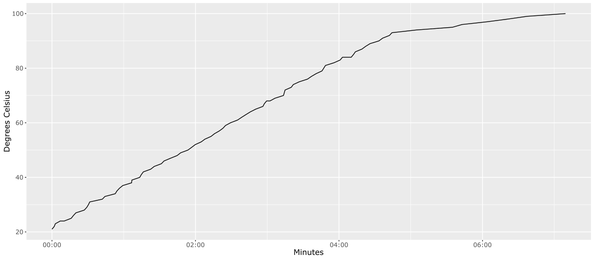

My tea-crazy flatmate has a fancy kettle, which brings the water to the temperature you choose. It is frustratingly slow to boil.
When I suspected that it slowed the rate of heating as it approached the target temperature, I spent a happy evening heating different volumes of water to different temperatures to see how the kettle behaved. Then I lost almost all the data in a digital equivalent of spilling tea over my lab notes.
Here is the single surviving experiment.

Presumably the kettle avoids overshooting, so I tested that in one (lost) experiment with a very small amount of water and a low target temperature. It did, indeed, overshoot, suggesting that the engineers optimised this kettle for precision, at the expense of speed.
Another flatmate then suggested another experiment to test the reaction speed of the thermostat, by boiling the kettle, and then chucking a mug of cold water in. The thermostat responded immediately, which suggests that the problem is in fact the element.
Please comment below